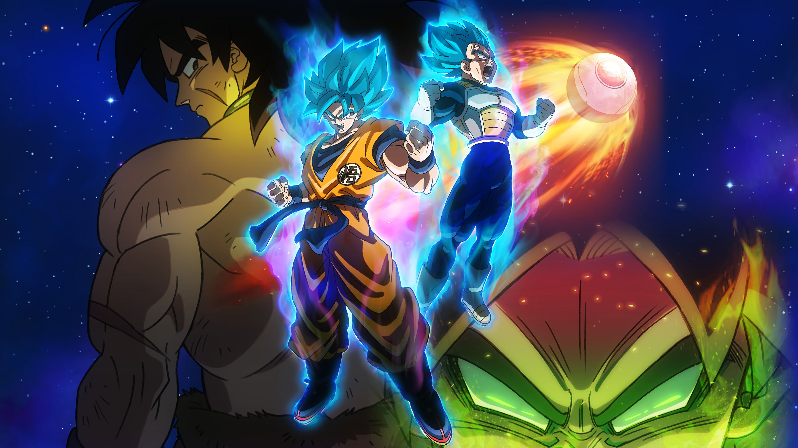

Son Goku
The man who's inspired millions to be the best they can be.
Here's a list of Transformations and abilities.
- Super Saiyan 2 - Gohan's transformation into a Super Saiyan 2 is one of the most iconic moments in Dragon Ball Z history. But by the time Goku entered the form, it had already become old-hat. He only spends one real fight employing the form -- against Majin Vegeta.
- Golden Great Ape - The Golden Great Ape is a second transformation that appears only in Dragon Ball GT. While Baby Vegeta's Golden Great Ape transformation is more iconic, Goku's was equally important. Goku transforms into the Golden Great Ape when staring into the sight of a full Earth/full moon.
- Ultra Instinct - Ultra Instinct is undeniably the most powerful form Goku has ever taken. However, by the time Goku went Ultra Instinct, many fans felt burned out by all the new forms.
- Super Saiyan 4 - Dragon Ball GT gets a lot of hate from fans for being more than a little silly. However, Goku's Super Saiyan 4 form is arguably one of the coolest things to ever come out of the series.
- Super Saiyan God - Perhaps the hardest form for a Saiyan to achieve, Goku's Super Saiyan God form allowed him to match the strength of the legendary God of Destruction himself, Beerus. Only achievable thanks to the unification of pure-hearted Saiyans, Goku's sheer strength in this form is enough to bend the fabric of reality to the breaking point. One transformation permanently empowers a Saiyan beyond all prior limitations.